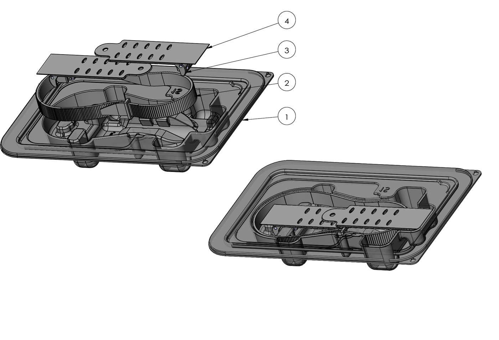

A groundbreaking innovation for skin stretching and secure wound closure, a simple yet highly effective method for a wide variety of complex skin wounds that do not respond to traditional care.

Complex wounds resulting from trauma, surgery, or chronic and acute conditions often necessitate surgery as the final solution. The TopClosure® TRS offers a novel alternative, providing both invasive and non-invasive options for wound management.
Applied non-invasively, the system adheres to the skin using a biocompatible, hypoallergenic tape, either before or after surgery. Where direct skin closure is expected under high tension, the system is used pre-operatively to stretch the skin, offering non-invasive external tissue expansion that eliminates the need for tissue expanders and reduces the extent of surgery and potential complications.

TopClosure® 3S assembly: (1) sterile blister tray · (2) approximation strap · (3) attachment plates ×2 · (4) adhesive stickers
Traditional tension sutures create localized stress points on the skin, leading to ischemia, tissue tearing and scarring. TopClosure® TRS instead leverages the skin's viscoelasticity:
Utilizes both acute intraoperative stress relaxation and pre- or post-operative mechanical creep for effective wound closure at any tension.
Functions as a tension-relief platform, reducing the need for extensive undermining of skin and surrounding tissues.
Minimizes dead space, hematoma formation and the need for drains, reducing infection risk.
Allows further skin approximation as a bedside procedure through mechanical creep, often under local anesthesia.
Often eliminates the need for skin grafts or flaps, simplifying surgical techniques and shortening hospital stays.
Reduces surgical complexity while accelerating wound closure with improved functionality and scar aesthetics.
Manufactured under an ISO 13485:2016 certified quality system. Sterile, single-use, all-polymer construction.
| Size | Strap | Color |
|---|---|---|
| 4 mm | 160 × 4 mm | Pink |
| 6 mm | 250 × 6 mm | Green |
| 8 mm | 250 × 8 mm | Grey |
Attachment plates 60 × 20 mm, common to all sizes. Lock-release ratchet mechanism.
From operating rooms across surgical specialties to trauma care in mass-casualty and combat scenarios.